Split Adaptation for Pre-trained Vision Transformers
1Northwestern University
2Nanyang Technological University
*Equal contribution
CVPR 2025
Adapting a pre-trained ViT to a new task usually means the client hands over its data, or the server hands over its model. Split Adaptation (SA) does neither: it shares only a low-bit quantized, noise-perturbed frontend, adapts from just a few labeled examples, and — across three datasets — matches or beats strong baselines while leaking neither the model nor the data, at a fraction of the client compute.
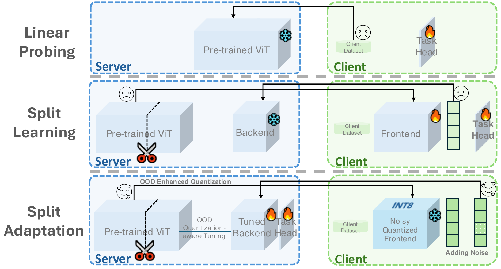
Abstract
Vision Transformers (ViTs), extensively pre-trained on large-scale datasets, have become fundamental to foundation models, enabling adaptation to diverse downstream tasks. Existing adaptation methods typically require direct data access, rendering them infeasible in privacy-sensitive domains where clients are often reluctant to share their data. A straightforward solution may be sending the pre-trained ViT to clients for local adaptation, which poses issues of model intellectual property and incurs heavy client computation overhead. To address these issues, we propose a novel split adaptation (SA) method that enables effective downstream adaptation while protecting data and models. SA, inspired by split learning (SL), segments the pre-trained ViT into a frontend and a backend, with only the frontend shared with the client for data representation extraction. But unlike regular SL, SA replaces frontend parameters with low-bit quantized values, preventing direct exposure of the model. SA allows the client to add bi-level noise to the frontend and the extracted data representations, ensuring data protection. Accordingly, SA incorporates data-level and model-level out-of-distribution enhancements to mitigate noise injection's impact. Our SA focuses on the challenging few-shot adaptation and adopts patch retrieval augmentation for overfitting alleviation. Extensive experiments on multiple datasets validate SA's superiority over state-of-the-art methods and demonstrate its defense against advanced data reconstruction attacks while preventing model leakage with minimal computation cost on the client side. Code is available at github.com/conditionWang/Split_Adaptation.
Problem Setting
Model adaptation usually follows a two-party setup: a pre-trained model sits on a server, and the labeled task data lives on a client. In non-sensitive domains the client can simply upload its data. But in healthcare, finance, or manufacturing, data is bound up with privacy, intellectual property, and ethical constraints, so sharing it is off the table.
Sending the model to the client instead runs into two problems: large pre-trained models are valuable IP their owners will not hand over, and adapting a billion-parameter model on the client is computationally prohibitive. Prior privacy-minded options each give something up. Split learning keeps raw data local and splits the model across parties, but it exposes intermediate representations to data-reconstruction attacks and pushes training cost onto the client. Offsite tuning sends a simplified emulator to the client, but that emulator is fully exposed and still demands heavy client-side tuning.
Split Adaptation is designed to satisfy all three requirements at once:
- 01Data protection. Nothing the client shares should let the server reconstruct its raw inputs.
- 02Model protection. The client should not be able to extract a high-quality copy of the pre-trained ViT, or obtain one cheaply.
- 03Few-shot efficacy at low client cost. Strong downstream accuracy from only a handful of labeled examples, with minimal client-side computation.
Method
Split Adaptation divides the pre-trained ViT into a frontend and a backend — the paper uses roughly the first two-thirds of the layers as the frontend and the last third as the backend. Only the frontend is sent to the client to extract representations; the backend stays on the server for the final adaptation. Crucially, the frontend is never shared in the clear: it is replaced by a low-bit (8-bit) quantized version, and the client further perturbs it with noise.
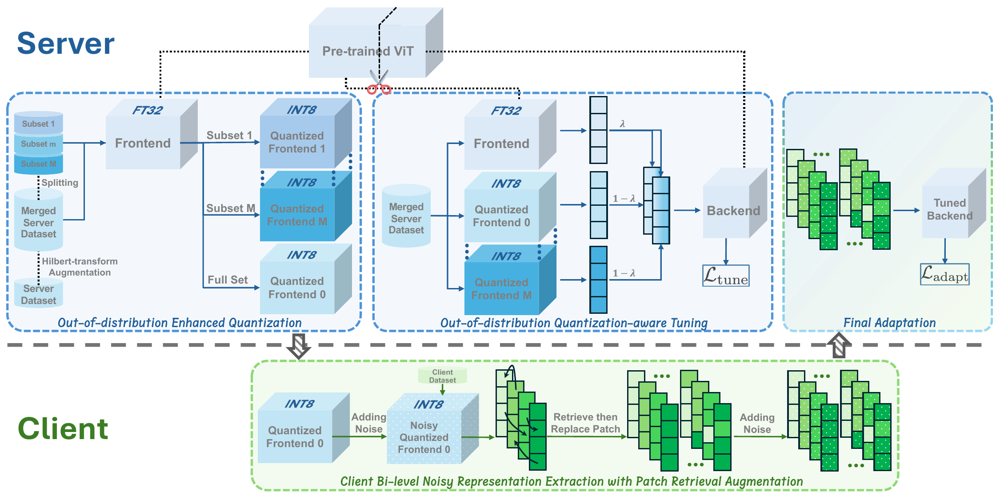
Out-of-distribution enhanced quantization. The frontend is compressed with 8-bit uniform symmetric quantization, choosing per-layer scaling factors with a Hessian-guided metric and layer-wise reconstruction. Because no target-task data is available, the scaling factors are optimized on the server's own data augmented with Hilbert-Transform (HT) out-of-distribution images, which keeps the quantized frontend accurate even when the client's distribution differs sharply from the server's.
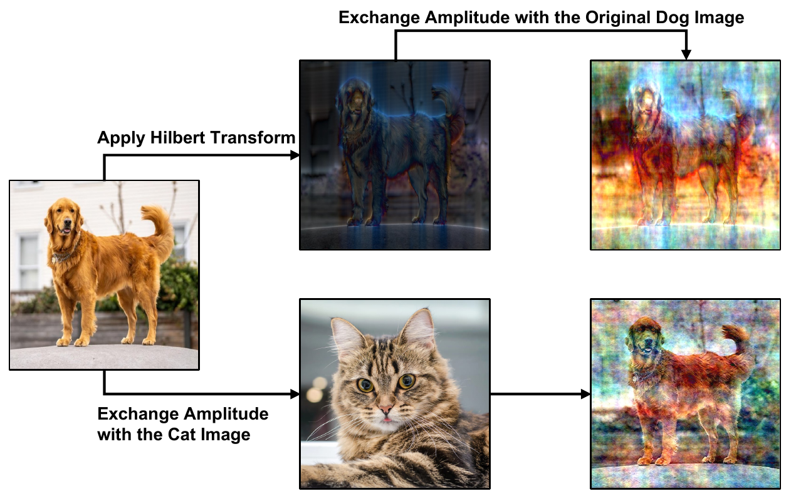
Out-of-distribution quantization-aware tuning. To make the backend tolerate both the quantization gap and the client's noise, the merged server set is split into subsets that yield several distinct quantized frontends. A representation-mixup between the original and quantized features (mixing weight drawn from Beta(0.75, 0.75)) then tunes the backend to generalize across these out-of-distribution frontends without overfitting the server data.
Bi-level noise for data protection. On the client side, per-layer Gaussian noise is injected into the received frontend, so the exact extracting model is unknown to the server; a smaller Laplace noise is then added to the extracted representations before upload.
Insight · two noises beat one
The model-level Gaussian noise amplifies the defense of the representation-level noise, so a much smaller Laplace perturbation already defeats reconstruction. The two act synergistically — an effect greater than the sum of the parts (see Figure 5).
Patch-retrieval augmentation for few-shot adaptation. With only a few labeled examples, adaptation overfits. SA builds a retrieval set for each patch position and, for every augmentation, replaces 50 randomly chosen patches with their most cosine-similar counterparts, repeating this to expand the few-shot set. The server then tunes only the backend's high-level features together with a fresh task head; task-head outputs are sent back to the client so the loss is computed there, keeping the client's labels private too.
Results
On ViT-Large, across CIFAR-100, Places365, and DomainNet-Clipart, SA is the best method in seven of the nine dataset×shot settings — winning every 5-shot setting — and is second best in another. Its closest competitor is split learning, which, unlike SA, leaks the client's data (shown in the next section).
Top-1 accuracy (%) under 3-, 5-, and 10-shot adaptation on ViT-Large across three client datasets (mean over three seeds; ± standard deviation). Following the paper, the best in each column is shown in blue bold and the second best in bold.
| Method | 3-shot | 5-shot | 10-shot | ||||||
|---|---|---|---|---|---|---|---|---|---|
| CIFAR-100 | Places365 | D.Net-Cl | CIFAR-100 | Places365 | D.Net-Cl | CIFAR-100 | Places365 | D.Net-Cl | |
| Linear Probing | 74.05±1.21 | 26.18±1.00 | 57.26±1.11 | 78.79±0.65 | 34.25±1.45 | 63.84±0.66 | 83.28±0.33 | 32.33±7.82 | 69.12±0.75 |
| Fine Tuning | 40.32±5.48 | 21.64±0.78 | 36.95±6.66 | 64.29±7.69 | 31.07±1.04 | 56.50±1.87 | 81.82±1.85 | 39.46±0.59 | 70.67±0.72 |
| LN-TUNE | 13.18±2.17 | 1.59±0.53 | 6.97±1.96 | 34.80±5.37 | 3.96±0.95 | 13.43±2.12 | 47.97±6.25 | 7.71±1.85 | 24.53±2.05 |
| Split Learning | 74.05±1.21 | 26.84±1.03 | 58.14±0.63 | 79.63±0.53 | 30.49±0.36 | 63.95±1.18 | 83.66±0.27 | 35.78±0.30 | 65.20±0.47 |
| Offsite Tuning | 42.37±2.98 | 24.98±0.55 | 40.56±4.00 | 64.83±6.17 | 30.45±0.80 | 56.43±0.45 | 80.11±1.07 | 36.22±1.33 | 68.43±0.64 |
| SA (ours) | 76.24±0.29 | 30.92±0.89 | 56.26±0.79 | 81.98±0.49 | 35.31±0.01 | 65.03±0.59 | 85.45±0.40 | 39.26±0.10 | 71.13±0.76 |
Scroll the table horizontally to see all nine settings.
SA reaches this accuracy while doing no training on the client — only representation extraction. The result is by far the lowest client footprint of any method: 2233 MB of GPU memory and 2.5 minutes, against thousands of MB and tens of minutes for the alternatives.
Client GPU memory (MB) and computation time (Min) per method.
| Method | GPU Mem (MB) | Time (Min) |
|---|---|---|
| Linear Probing | 6979 | 66 |
| Fine Tuning | 10302 | 34 |
| LN-TUNE | 5968 | 25 |
| Split Learning | 8932 | 15 |
| Offsite Tuning | 4896 | 23 |
| SA (ours) | 2233 | 2.5 |
Ablation of SA's major components (5-shot accuracy, %).
| Variation | CIFAR-100 | Places365 | D.Net-Cl |
|---|---|---|---|
| w/o HT Aug | 80.37 | 35.27 | 64.59 |
| w/o OOD QAT | 79.03 | 29.50 | 64.42 |
| w/o QAT | 80.05 | 29.59 | 64.16 |
| w/o PR Aug | 79.90 | 29.56 | 52.85 |
| SA (ours) | 81.98 | 35.31 | 71.13 |
Every component earns its place: dropping patch-retrieval augmentation costs the most on DomainNet-Clipart (71.13 → 52.85), while removing the out-of-distribution quantization-aware tuning cuts Places365 by roughly six points (35.31 → 29.50).
Data & Model Protection
The model stays protected. We test the three most plausible ways an adversary could try to build a high-quality model from what SA exposes: tune a head on the quantized frontend, on the (hypothetically revealed) original frontend, or on the quantized frontend with an auxiliary backend. All three land far below SA — and even below linear probing — so the quantized frontend does not hand over a usable model.
Accuracy (%) of the three most plausible model-extraction attempts, versus full SA, on ViT-Large.
| Extraction attempt | CIFAR-100 | Places365 | D.Net-Cl |
|---|---|---|---|
| Quant. Frontend | 26.34 | 13.45 | 26.70 |
| Original Frontend | 26.53 | 13.72 | 27.12 |
| Auxiliary Backend | 30.65 | 10.15 | 16.56 |
| SA (ours) | 81.98 | 35.31 | 71.13 |
The data stays protected. We extend the state-of-the-art reconstruction attack FORA to ViTs and run it against SA and split learning (the only baseline that also shares representations). SA drives every reconstruction well below split learning's on all three datasets.
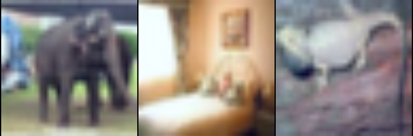
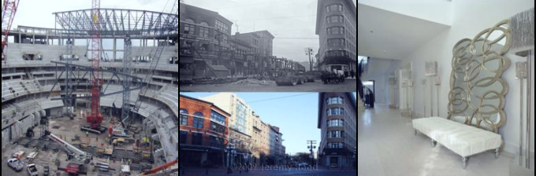
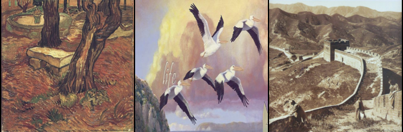
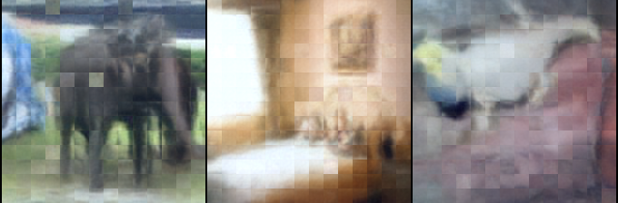
S 0.80 · P 26.1 · L 0.46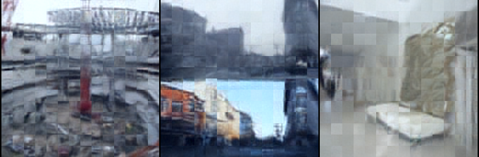
S 0.43 · P 20.8 · L 0.67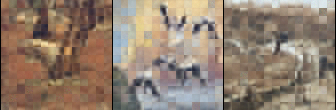
S 0.59 · P 22.1 · L 0.46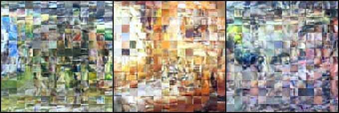
S 0.23 · P 15.2 · L 0.70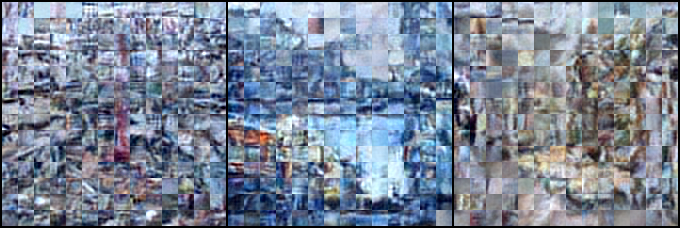
S 0.30 · P 16.6 · L 0.73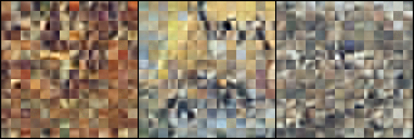
S 0.25 · P 14.4 · L 0.60Figure 4. Defense against the FORA reconstruction attack, SA versus split learning. Quality is measured by SSIM (S↓), PSNR (P↓), and LPIPS (L↑): lower SSIM/PSNR and higher LPIPS mean a worse reconstruction, i.e. stronger protection. SA is better on every dataset and every metric.
Both noise levels matter. Removing either the model-level Gaussian noise or the representation-level Laplace noise weakens protection; together they are more than the sum of their parts.
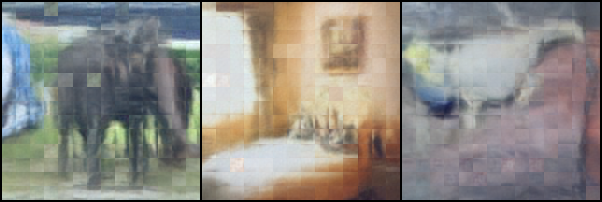
S 0.76 · P 23.1 · L 0.49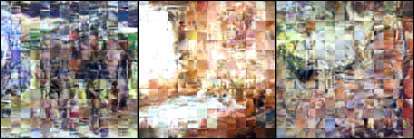
S 0.28 · P 16.4 · L 0.67Figure 5. Ablation of SA's bi-level noise against FORA on CIFAR-100. Dropping either noise level yields a sharper reconstruction (higher SSIM/PSNR, lower LPIPS); the full bi-level noise gives the strongest protection.
Takeaway
Split Adaptation shows that a pre-trained ViT can be adapted to a new task, from only a handful of labeled examples, without the client ever seeing the real model and without the server ever seeing the real data. A quantized, noise-perturbed frontend protects the model's parameters; bi-level noise and patch-retrieval augmentation protect the client's data and labels while keeping accuracy high; and the whole procedure runs at a fraction of the client compute of prior methods. Across CIFAR-100, Places365, and DomainNet-Clipart it matches or beats strong adaptation baselines while, unlike them, leaking neither the model nor the data.
BibTeX
@inproceedings{wang2025split,
title = {Split Adaptation for Pre-trained Vision Transformers},
author = {Wang, Lixu and Shang, Bingqi and Li, Yi and Mohapatra, Payal
and Dong, Wei and Wang, Xiao and Zhu, Qi},
booktitle = {Proceedings of the IEEE/CVF Conference on Computer Vision
and Pattern Recognition (CVPR)},
year = {2025}
}